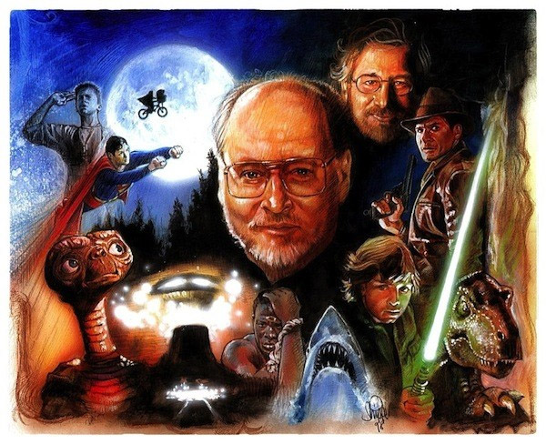

John Williams ha fet una contribució excepcional a la música de cinema al llarg de la seva impressionant carrera de set dècades com a compositor, director d'orquestra i pianista, on les seves partitures cinematogràfiques són algunes de les més emblemàtiques i memorables de la història, fet que li han merescut nombrosos reconeixements, com ara 25 premis Grammy, cinc premis de l'Acadèmia i quatre premis Globus d'Or.
Williams és àmpliament considerat com un dels compositors més grans de la història del cinema i és la segona persona més nominada en la història dels Premis de l'Acadèmia, amb 53 nominacions i ha tingut una llarga relació amb el director Steven Spielberg, component música per a gairebé tots els llargmetratges de Spielberg, a més de treballar en les franquícies principals de George Lucas.
La seva influència s'estén més enllà de la indústria cinematogràfica, inspirant altres compositors en els camps de la música clàssica popular i contemporània.
Va néixer el 8 de febrer de 1932 a Floral Park, Nova York. És el primogènit d'Esther i John Williams Sr., i té dos germans i una germana. El seu pare va ser un percussionista de jazz que va tocar amb el llegendari quintet de Raymond Scott.6 a Los Angeles; allí, John Williams va assistir a l'escola secundària North Hollywood High School, institució en què es va graduar el 1950. Després es va traslladar a la Universitat de Califòrnia, on va estudiar piano i composició, i va prendre classes particulars amb el compositor Mario Castelnuovo-Tedesco i amb el pianista-arranjador Bobby Van Eps.8 En 1952, va ser reclutat per a la Força aèria dels Estats Units, on va arreglar i va dirigir música per a la banda de la força aèria, com a part dels seus deures.
Quan el seu servei militar va acabar el 1955, Williams es va traslladar a la ciutat de Nova York i va entrar a l'Escola Juilliard, on va estudiar piano amb Rosina Lhévinne.7 En aquell període va treballar com a pianista de jazz en diversos estudis i clubs de Nova York. També va tocar per al compositor Henry Mancini a les bandes sonores de Peter Gunn (1959), Dies de vi i roses (1962) i Charade (1963). A principis de la dècada de 1950 va treballar com a arranjador i líder de banda per a Frankie Laine i Vic Damone.10 En 1960 va ser contractat per Columbia Records com a pianista i compositor, on va realitzar nombrosos àlbums al costat del compositor d'origen alemany André Previn.
Aquest lloc web preté ser un petit homenatge a aquest gran compositor que està estructurat de la següent manera
Pàgina de benvinguda del lloc web, on podreu trobar un formulari de contacte realitzat en JS en cas que ens vulgueu dir alguna cosa sobre el lloc web
Aquesta pàgina, on la intenció és fer un petit resum del que podreu trobar en aquest lloc web, així com una mica de presentació sobre John Williams
En aquesta part de la web podreu trobar diferents articles publicats sobre el compositor que s'han trobat per internet, on es poden incloure entrevistes, concerts, reportatges, discografies i moltes altres coses.
Aquí podreu trobar una sèrie d'enllaços que s'han utilitzat per a poder obtenir el contingut d'aquest lloc web a fi de reconèixer la seva autoria als seus respectius autors.